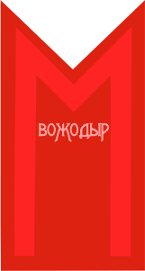
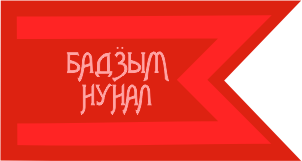
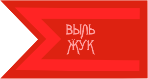

БАДӞЫМ НУНАЛ. Большим событием в деревне всегда было начало весенних полевых работ (гырыны /кизьыны потон, геры/ кидыс поттон, акашка), которое сопровождалось различными обрядами и народным весельем. Этот праздник был, по-видимому, самым важным в календарном цикле. Об этом свидетельствует и отдельный напев (акашка-гур), обслуживавший только этот обряд, тогда как все остальные календарные обряды обслуживались практически одним типизированным напевом, называемым вӧсь гур, обозначавшим мелодию обряда гостевания в честь какого-либо календарного праздника. С внедрением православия этот важный сельскохозяйственный праздник приурочился к пасхе (быдӟым нунал, великтэм, паска, акашка), особенно в те годы, когда пасха была поздней. Поэтому в ряде мест у южных удмуртов пасха именуется акашкой или же акашка входит как составной элемент в празднование пасхи. Но, если даже пасха не совпадала по сроку с акашкой, обрядовое содержание этого дня было дохристианским, это были обряды встречи весны, а пасхальным было лишь известное словесное приветствие людей при встречах. Даже обязательные в пасху крашеные яйца издревле были символом плодородия и как таковые являлись элементом календарной обрядности. В пасху, как и в русских деревнях, водили хороводы, качались на качелях, катали яйца, позднее к ним добавились шары и кольца - все это должно было, по поверьям, способствовать будущему урожаю. Постоянного срока проведения праздника гырыны потон, акашка, не было, он зависел от погодных условий и готовности земли к посеву, поэтому каждый раз назначался советом домохозяев. В назначенный день с утра, чаще в понедельник или четверг, всей деревней осматривали лошадей, лучшую выбирали для выполнения обряда. Первую борозду поручали уважаемому старику, человеку "с легкой рукой". В некоторых деревнях первую борозду каждая семья начинала на своей полосе (но все же на одном поле), потом собирались все вместе. Обязательным было жертвоприношение божеству земли: в борозду опускали горбушку хлеба и яйцо, а также кусочки от всех принесенных видов еды и напитков, прося у него содействия в проведении посевной и обеспечения хорошего урожая. Засевая вспаханный участок, вместе с зерном бросали крашеные яйца, "чтобы зерно уродилось с яйцо". Дети и молодежь наперегонки собирали их. Если при этом кто-то падал, это считалось хорошим предзнаменованием: значит, колос будет тяжелым. После выполнения обряда все возвращались в деревню. Взрослые проводили время в традиционном гостеваний, угощаясь в честь праздника плуга. При этом в каждом доме сначала пели обрядовую песню акашка гур, а потом и другие. Молодые люди совершали объезд дворов, разыгрывая моление. По улице ехали с песнями. После этого они присоединялись к девушкам и проводили время на лужайке где-нибудь на склоне горы за деревней, забавляясь песнями, плясками, играми. Шумные игры сменяли спокойные песни, которые пели, стоя кругом, держа друг друга за руки, за талию и раскачиваясь из стороны в сторону - манера исполнения, характерная почти для всех финно-угорских народов. Особенно было удобно так петь песни, объединяемые под названием ай-кай гурьёс. Это четырехстрочные песни, каждая из которых заканчивается укачивающим припевом ай¬кай. Надо сказать, что в праздничных хороводах нередко участвовали и взрослые, приходившие посмотреть развлечения молодежи. Да и молодежь, уйдя с лужайки, могла прийти в любой дом, где собирались взрослые, чтобы повеселить, развлечь их песнями и плясками, показать свои наряды, а значит и свое искусство рукоделия, посмотреть приезжих гостей, если такие были, послушать их песни. Поразвлекав взрослых в нескольких домах, молодежь уходила на свое традиционное место гуляния, где, меняя виды развлечений, проводила время до поздней ночи. Так забавлялась молодежь не только в праздники: песни, пляски, разнообразные игры, хороводы были их повседневной забавой с первых весенних праздников до завершения летнего праздничного цикла. Из книги: Удмурты [Текст] : историко-этнографические очерки / УИИЯЛ УрОРАН; Научный ред. д-р ист. наук В.В. Пименов. - Ижевск : Удмуртский институт истории, языка и литературы УрО РАН, 1993. – 392 с.
ВОЖОДЫР. 3имний цикл календарной обрядности удмуртов начинался в дни зимнего солнцестояния, называвшегося вожодыр, что означает переходное время. Первоначально это слово обозначало, очевидно, запретное, табуированное время, так как в этот период запрещалось работать, особенно строго соблюдался запрет на стирку. Объясняли это тем, что якобы в эти дни по земле гуляют страшные духи (вожо), приносящие человеку беды и несчастья. Под влиянием христианства в быту удмуртов утвердились элементы рождественско-новогоднего праздничного цикла, объединенного традиционным названием вожодыр, которым стали именовать период от рождества до крещения. Первый традиционный зимний праздник (толсур, ымусьтон) со временем приурочился к рождеству. В первый его день снималось табу на пищу, наложенное после осеннего праздника сӥзьыл юон, проводившегося в конце ноября - начале декабря. К празднику прибирали в доме, готовили пиво, кушанья, приглашали гостей, назначали свадьбы. Готовясь к празднику, взрослые узнавали, у кого из деревенской родни намечаются званые гости: по обычаю, их следовало пригласить к себе для угощения, поэтому в ожидании гостей к празднику готовились лучше, и он проходил с большей торжественностью. В этот день начиналось ряженье (пӧртмаськон, пенӟаськон, вожояськон, чокморскон). Считалось, что ряженые отпугивают злых духов, изгоняют болезни, приносят удачу в различных делах, способствуют урожаю конопли, увеличению поголовья скота. Поэтому их встречали радушно в каждом доме: ряженые пели, плясали, за что получали угощение. Каждому из них давали что-нибудь съестное, обычно какое-нибудь хлебное изделие: кусок хлеба, коврижки, пирога или даже просто горсть муки. Все это впоследствии ряженые скармливали своему скоту. Для святочных игр молодежь подыскивала отдельный дом (старый нежилой дом или новый, но еще не заселенный), где можно было бы проводить вечера. Там в эти дни рассказывали сказки, загадывали загадки, разыгрывали комические сценки с колодником и урядником, с бабой-ягой и солдатом, пели, плясали, играли в жгуты, жмурки, лодыжки, горностая, стрельбу в рябчика, отгадчика и др.; молодежь гадала о суженых по поленьям (если из поленницы вытянуто ровное, гладкое полено, значит муж или жена будут с ровным характером и наоборот), по колосьям ( из кучи соломы находили колос и считали, сколько в нем зерен: чем их больше, тем богаче будет муж), по овцам (в темноте ловили овцу и по ее масти судили о цвете волос нареченных) и т. д. Более верным считалось гадание в новогоднюю ночь; в это время гадали и взрослые, загадывая о семейном благополучии и достатке, о покойниках и свадьбах. Первый день нового года, по народным поверьям, мог предсказать, как сложится год, надо только все - от погоды до действий людей - примечать. Определенными действиями (например, детям давали подержать деньги, причем чем крупнее, тем лучше) в этот день стремились содействовать благополучию. Женщины, опережая друг друга, скатывались на санках с горы, считая, что у первой лен будет длиннее. Ряжение и гадания заканчивались на крещение (йӧ вылэ султон). Накануне, как и перед рождеством, в домах наводили чистоту и порядок, готовились принимать гостей. Всякие работы в этот день также запрещались. С утра шли к реке, топором чертили на льду крест и на этом месте рубили прорубь: по народным воззрениям, в этот день все злые духи уходили под воду. После завершения официальной обрядовой части взрослое население деревни гуляло, сгруппировавшись по родственному, патрономическому признаку; переходя поочередно из дома в дом, гостили понемногу у всех. Между угощениями время проводили в разговорах, беседах о хозяйстве, семейных делах, рассказывании побывальщин, разных происшествий и, конечно, пели, главным образом застольные, а также плясовые песни. Хозяева угощали своих гостей не только кушаньями и напитками но и песнями. В ответ гости тоже пели, получался своеобразный песенный диалог мелодию понравившейся песни гостя старались запомнить, чтобы спеть потом в своей деревне. Такое гостевание было традиционной частью любого удмуртского праздника. По замечанию К. И. Герда, в праздники удмуртские деревни представляли собой песенное царство. "Гости,- писал он,- въезжают к вотяку с песней, угощаются песней и провожаются всей деревней с песнями до полевых ворот". На праздниках пели все желающие: кто-то запевал, остальные подхватывали. В каждой деревне были свои песенники, известные или знанием большого количества песен, или красивым звонким голосом, искусством пения. При этом в народе бытовало мнение, что песенным даром судьба наделяла несчастливых. Такой взгляд на трудное искусство пения отразился и в записанной К. Гердом песне: ...Пичиисен кырӟан усто луи,- С малых лет научился хорошо петь,- Шудтэм луэме туж тодмо. Очень заметно, что буду несчастным. (Перевод К. Герда). Хорошую певунью сравнивали с соловьем, а человека, искажающего мелодию, называли паллян кырӟась, то есть поющий влево, уводящий мелодию. Через семь-восемь недель после нового года, в конце февраля - начале марта праздновалась масленица (вӧй дыр, вӧй пырон-потон, вӧй келян, масленча), которая завершала зимний цикл календарной обрядности и была началом весеннего цикла. После проводов масленицы наступал семинедельный великий пост, в течение которого крестьяне готовились к полевым работам. Приятным для молодежи занятием в эту пору было беление холстов (дэра гужатон), ассоциировавшееся с веселым время препровождением. Сотканные зимой холсты ранней весной стелили на снег. Время от времени их переворачивали и смачивали водой, мыли и снова стелили. Это продолжалось в течение двух-трех недель. Все это время ночами молодежь караулила их, проводя время неподалеку, развлекаясь играми - традиционным репертуаром устного народного творчества. В прошлом веке к последней неделе поста приурочились обряды, отмечающие пробуждение природы, начало года земледельца и связанные с ними очистительные обряды. В ночь на вербное воскресенье, великий четверг или пасху выполнялась процедура изгнания шайтанов, колдунов и прочих злых духов и болезней. Дождавшись темноты, парни и девушки, взяв ивовые прутья, с шумом проходили из конца в конец деревни и заходили в последний дом. Хозяин дома зажигал лучину, выходил вместе с пришедшими во двор и бросал ее. Кто-то подхватывал лучину и бросал в товарища, а тот - в другого и так далее до тех пор, пока та совсем не потухнет. Упавшую лучину били прутьями. Когда лучина гасла, хозяину говорили, что шайтана выгнали и он может идти домой, а сами, захватив обгоревшую лучину, отправлялись в следующий дом. Процедуру повторяли во всех дворах, после чего все лучины уносили за деревню, сжигали и расходились по домам. В Глазовском уезде, по наблюдениям Н. Г. Первухина, обряд исполнялся в великий четверг утром мужчинами, которые обходили все строения своего хозяйства, ударяя можжевеловыми ветками, потом верхом выезжали за ворота и вместе с другими проезжали до конца деревни, где втыкали свои ветки и возвращались домой. В вербное воскресенье удмурты приносили домой и ставили в передний угол к иконам ветки вербы, которые, как и у русских, использовали при первом выгоне скота. Насыщен был обрядами великий четверг (кулэм потон уй, кулыш уй, поркуш уй, - ночь выхода мертвых, или ӵук мунчо уй, - ночь перед утренней баней, так как в ряде мест утром в этот день принято мыться в бане). Его удмуртские названия свидетельствуют об очис¬тительном характере обрядов этого дня, их связи с культом пред¬ков и глубокой древностью. По повериям, в эту ночь по земле гуляли мертвецы, всякая нечисть (жобъес), которые могли наслать болезнь, порчу. Страх перед их вредоносными действиями породил различные магические приемы: с вечера усадьбу очерчивали топором, косой или ножом, на окна и двери клали металлические предметы (шило, нож, топор и т. п.), рисовали дегтем или углем кресты, втыкали ветки можжевельника, терновника, пихты или рябины; дымом можжевельника окуривали избу. В полночь ходили с трещотками, стреляли из ружей, жгли порох, ударяли палками по углам домов. Как только появлялись первые проталинки и начинала зеленеть трава, проводился праздник встречи весны, называемый гуждор или йӧ келян. Молодежь и старики шли в этот день в отведенное для молений место и варили собранные для этого случая яйца, кашу или суп. Затем все жители деревни отправлялись к реке и совершали ей жертвоприношение, "чтобы весна была тихая, чтобы разлив не принес убытков, чтобы вместе со льдом ушли болезни животных и людей, чтобы не тонули ни люди, ни скот". Девушки с песнями шли по берегу, провожая лед, парни стреляли. Затем начиналось общее веселье с песнями, плясками. В конце XIX в. этот праздник был перенесен на более поздний срок и стал составной частью праздника первой борозды (геры поттон). Из книги: Удмурты [Текст] : историко-этнографические очерки / УИИЯЛ УрОРАН; Научный ред. д-р ист. наук В.В. Пименов. - Ижевск : Удмуртский институт истории, языка и литературы УрО РАН, 1993. – 392 с.
ГЫРОН БЫДТОН. Обрядовые праздники, проводимые после окончания весенней пахоты, также занимали важное место в календарном цикле. Существовали разные термины для их обозначения, чаще всего узколокальные. Разными были и сроки их проведения, которые зависели от погодных условий. Наслоение христианской терминологии и деталей обрядов усложнили их выделение. По-видимому, обряды окончания пахоты и сева (гырон быдтон, ю вӧсь, бусы вӧсь) и троицы (куар басьтон, куар вӧсян, трочин) нужно рассматривать как локальные проявления единого представления о необходимости проведения обрядов и благодарений в честь окончания сева и обеспечения будущего урожая, которые слились с троицей. Эти праздники проводились в начале дней летнего солнцестояния. Так же, как и во время праздника первой борозды, одним из главных моментов праздника гырон быдтон являлись скачки на лошадях. К этому дню по деревне собирали яйца, у молодушек - головные полотенца и кисеты, чтобы вручить их в качестве призов победителям скачек и других игр-состязаний. Лошадь-победительницу на скачках кормили кашей. Обязательным моментом празднеств были моления: семейные и коллективные - патронимические или деревенские. Именно в этот период проводились крупные моления (булда вӧсь, дэмен вӧсь, ошпи сиён), на которые собиралось около десятка деревень. Развлекательная часть была традиционной: песни, хороводы, игры, пляски - репертуар которых был достаточно разнообразен, хотя частично и повторялся. В местах шумного праздничного веселья обычно находились и дети. Они наблюдали за играми молодежи, копировали их сами: игровые песни и хороводы в праздники среди детей были также распространенным явлением. Постепенно они разучивали весь игровой и в целом развлекательный репертуар своей деревни. В последние дни летнего солнцестояния, период между троицей и Петровым днем, называемые, как и в дни зимнего солнцестояния, вожодыр или инвожо, устраивался летний праздник, называвшийся в разных местах гербер, гужем юон, куарсур, Петрол, Петров день. Названия говорят о приуроченности традиционных праздников к Петрову дню церковного календаря. Гужем юон или гербер считался последним праздником земли в году (музъемлэн берпуметй праздникез), последним летним праздником: до этого дня заканчивали все весенние земледельческие работы, в которых применялся плуг; отсюда и название праздника гербер, что значит: после плуга. Другое его название куарсур (праздник пива в честь травы) связано с буйным распусканием зелени к этому времени. После него начинался сенокос. Как и в другие календарные праздники, происходило традиционное праздничное гостевание взрослых и молодежное гуляние. Во многих деревнях в это время игрались свадьбы, а также проводился обряд купания тех молодушек, чьи свадьбы сыграны зимой. Во всех разновидностях обряда главным мотивом выступала вера в магическую связь детородной функции человека с плодородием земли. Об этом говорит и то, что среди участников обряда присутствовала одна пожилая женщина, переодетая в мужской костюм. Отголосками этих верований, восходящих, очевидно, к древнему культу плодородия, являлись также предписания кататься по земле во время первого весеннего грома, дергать лен и коноплю полуобнаженными, скатываться с пригорков во время весеннего праздника гуждор, валяться в снегу в масленицу. Из книги: Удмурты [Текст] : историко-этнографические очерки / УИИЯЛ УрОРАН; Научный ред. д-р ист. наук В.В. Пименов. - Ижевск : Удмуртский институт истории, языка и литературы УрО РАН, 1993. – 392 с.
ВЫЛЬ ӜУК. Осенний цикл календарных праздников начинался с праздника в честь нового урожая (выль ӝук), слившегося затем с Ильиным днем. В этот день всю пищу приготовляли из продуктов нового урожая. Специально к этому дню или непосредственно в этот день резали барана или хотя бы петуха, пекли хлеб из муки свежего помола, варили овсяный кисель. С поля приносили колосья ржи, ячменя, стручки гороха, листья капусты, клали все это на край стола и совершали обряд куяськон в честь умерших. Колосья окунали в суп и освящали их, прося у бога и воршуда хорошего урожая. Пучок из разных колосьев подвешивали в семейной куале. Этот день отмечали семьей, но с приглашением соседей, которые в свою очередь, когда сами отмечали выль ӝук, приглашали тех, к кому были званы. В четверг после Ильина дня выходили жать. Перед отправлением в поле хозяин освящал во дворе масло, которым смазывали серп, "чтобы жатва прошла хорошо и споро". В поле раздавливали в руке ком земли и потирали им руки, чтобы они не болели. В день зажина выжинали только три снопа и больше не работали. Перед паровой пашней праздновали малую акашку. Обрядовая часть, выполняемая молодежью, носила преимущественно игровой характер. В дом, назначенный для проведения обряда, девушки несли испеченные дома коврижки (бискыли), сюда же собирались все парни. Четыре-пять парней, распределив, кому кого поминать, с хлебом в руках совершали молитву, после чего, отрезав от каждой коврижки по кусочку, возвращали их хозяйкам. Отведав хлеба, крошили в чашки и шли за реку, где, помолившись, съедали. Возвращаясь, зачерпывали в чашки воду и обливали девушек. После этого молодежь уходила гулять, а старики, угощаясь и распевая песни, сидели в этом же доме. На обжинки оставляли добрую полосу. Заканчивая жать, соблюдали некоторые обычаи, направленные на обеспечение урожая в будущем. По наблюдениям Б. Гаврилова, закончив жать, садились на последние снопы, лицом к югу, жали горсть жнива и бросали через плечо. Потом съедали кусок хлеба, прося силы на будущее. После того, как все снопы свозили на гумно, пекли коврижки-бискыли с конопляным семенем и угощали деревенских в честь окончания жатвы (аран быдтон). Из осенних праздников необходимо также отметить обрядовую игру ряжения (пӧртмаськон), которая проводилась после Покрова, в конце октября - начале ноября, с участием Осени в виде бородатого старика в темном зипуне и его молодой жены - Зимы в белом одеянии cо свитой из двух казаков с саблями, роль которых обычно играли девушки, и еще нескольких ряженых. В других местах окончание полевых работ отмечали устройством молодежного гуляния (пинал куно). Молодежь одной деревни (а в большой деревне - одной улицы) приглашала в гости своих сверстников из другой деревни (улицы). В назначенный день гостей встречали и вели в дом к одному из участников гуляния, куда собиралась вся молодежь. Повеселившись здесь, шли в другой дом. Завершал годовой цикл календарных обрядов осенний праздник сӥзьыл юон, отмечавшийся в конце ноября - начале декабря. В семейной куале после обеда, "чтобы солнце увидело", проводилось моление о том, чтобы был хлеб, размножался скот, семья пребывала в здравии. Как и в другие праздники, ходили друг к другу в гости. Из книги: Удмурты [Текст] : историко-этнографические очерки / УИИЯЛ УрОРАН; Научный ред. д-р ист. наук В.В. Пименов. - Ижевск : Удмуртский институт истории, языка и литературы УрО РАН, 1993. – 392 с.
Формирование традиций и обычаев удмуртского народа заняло многие столетия. В древние времена жизнь каждого удмурта от мала до велика неразрывно была связана с сельским хозяйством. Именно сельское хозяйство послужило отправной точкой для развития обрядов и жертвоприношений, целью которых было увеличение урожайности и плодородия земель, а также улучшение благосостояния жителей селения. Возникновение и бытование календарных обрядов связано с периодичностью и повторяемостью основных видов занятий. Наиболее значимыми периодами в обрядовом календаре считались дни зимнего и летнего солнцестояния, весеннего и осеннего равноденствия, а также дни, связанные с определенными фазами луны, вокруг которых группировались традиционные обрядовые циклы. В них отразились "древние взгляды на природу и попытки воздействовать на нее, повседневные думы и заботы крестьянина о хлебе насущном, об урожае, от которого зависело благополучие семьи". Приуроченные к важнейшим этапам сельскохозяйственных работ (начало и конец сева, сенокос, начало и окончание уборки урожая и т. п.) календарные праздники представляли собой сложные комплексы, включавшие, помимо обрядовых действий, молитвенных и песенных заклинаний, гадания, приметы и суеверия, благопожелания и табу на какие-либо действия в те или иные отрезки времени, а также разнообразные виды развлечений, одни из которых приурочивались к определенным праздникам (игры с яйцами и качели в пасху, ряженье осенью и в святки), другие были неотъемлемой частью любого праздника (песни, пляски, игры). Возникшие в глубокой древности как аграрно-магические действа календарно-обрядовые праздники, начиная с XVIII в., испытали заметное влияние христианства, и в конце XIX - начале XX в. их проведение нередко приурочивалось к дням церковных праздников (рождеству, крещению, пасхе, троице и т. д.), названия которых постепенно заменяли традиционные или использовались как синонимы наравне с дохристианскими названиями. При всем том они сохранили существенную часть дохристианской обрядности, в том числе и связанные с культом предков, что было весьма характерно для удмуртской аграрной обрядности. В начале XX в. календарно-обрядовые праздники нередко имели уже тенденцию к превращению в игру, свидетельствуя об эволюции обрядов, являющейся отражением эволюции мировоззрения их исполнителей. Такие обряды выполнялись как бы и в шутку и всерьез: от них совсем еще не отказались, но и былой серьезности в их отправлении не сохранилось. Их исполняла молодежь, для которой это было скорее игрой, нежели серьезным мероприятием, но в соответствующие дни игрой обязательной. Постепенно их переставала соблюдать и молодежь, они переходили в детский репертуар. Однако, являясь важной частью народного быта и творчества, календарно-обрядовые праздники не могли исчезнуть полностью. Некоторые из них, претерпев заметные изменения, в сельской местности продолжают бытовать и поныне. Из книги: Удмурты [Текст] : историко-этнографические очерки / УИИЯЛ УрОРАН; Научный ред. д-р ист. наук В.В. Пименов. - Ижевск : Удмуртский институт истории, языка и литературы УрО РАН, 1993. – 392 с.
Виртуальная выставка Калык улон Дауръёс пыр вуэм йылолъёс